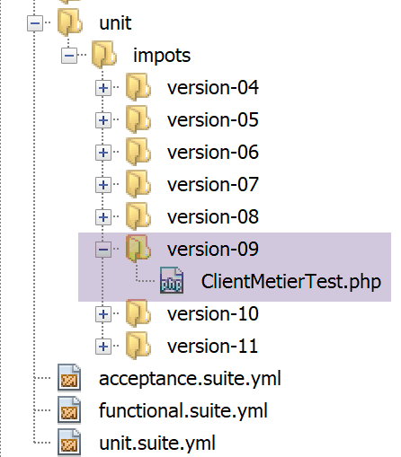
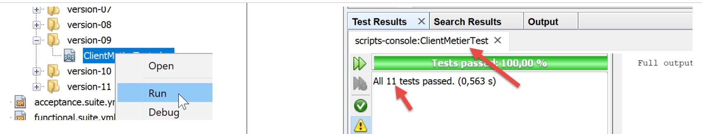

19. Ejercicio práctico – version 9
En este version, vamos a mejorar el servidor de la siguiente manera:
- Actualmente, cada vez que se realiza una consulta, los datos de la administración tributaria se buscan en la base de datos. Vamos a utilizar una sesión:
- en la primera consulta de un usuario, los datos de la administración tributaria se buscan en la base de datos y se guardan en la sesión;
- en las siguientes solicitudes del mismo usuario, los datos de la administración tributaria se buscan en la sesión. Cabe esperar una ligera reducción del tiempo de ejecución, ya que las consultas a la base de datos son costosas;
- el servidor registrará en un archivo de texto los momentos importantes:
- la autenticación correcta o fallida;
- la validez o no de los parámetros enviados por el cliente;
- el resultado del cálculo del impuesto;
- los diferentes casos de error;
- en caso de error grave, se enviará un correo electrónico al administrador de la aplicación;
El cliente también deberá modificarse para gestionar la cookie de sesión que se le enviará.
19.1. El servidor
Nos centramos en la parte del servidor de la aplicación.

Esta arquitectura se implementará mediante los siguientes scripts:

19.1.1. Utilidades

19.1.1.1. La clase [Logger]
La clase [Logger] se utilizará para escribir registros en un archivo de texto:
<?php
namespace Application;
class Logger {
//ini_set("display_errors", "off");
private $resource;
// dependencias
public function __construct(string $logsFilename) {
// la configuración del cliente
$this->resource = fopen($logsFilename, "a");
if (!$this->resource) {
throw new ExceptionImpots("Echec lors de la création du fichier de logs [$logsFilename]");
}
}
// écriture d'un message dans les logs
public function write(string $message) {
fputs($this->resource, (new \DateTime())->format("d/m/y H:i:s:v") . " : $message");
}
// se recupera la configuración
public function close() {
fclose($this->resource);
}
}
Comentarios
- línea 7: el recurso del archivo de registros;
- línea 10: el constructor de la clase recibe como parámetro el nombre del archivo de registros;
- línea 12: se abre el archivo de texto en modo de adición (a+): el archivo se abrirá y se conservará su contenido. Las escrituras se realizarán al final del contenido actual;
- líneas 13-15: si no se ha podido abrir el archivo, se lanza una excepción;
- líneas 19-21: el método [write] permite escribir el mensaje [$message] en el archivo de registros, precedido de la fecha y la hora;
- líneas 24-16: el método [close] permite cerrar el archivo de registros;
Nota: la aplicación del servidor puede atender varios clients simultáneamente. Sin embargo, solo hay un único archivo de registro para todos ellos. Por lo tanto, existe el riesgo de accesos concurrentes para escribir en el archivo. Por lo tanto, sería necesario sincronizar las escrituras para evitar que se mezclen. Para ello, PHP dispone de semáforos [https://www.php.net/manual/fr/book.sem.php]. Aquí ignoraremos la sincronización de las escrituras, pero hay que ser consciente del problema.
19.1.1.2. La clase [SendAdminMail]
La clase [SendAdminMail] permite enviar un correo electrónico al administrador de la aplicación en caso de que esta se bloquee:
<?php
namespace Application;
class SendAdminMail {
// se crea un cliente HTTP
private $config;
private $logger;
// se preparan los parámetros
public function __construct(array $config, Logger $logger = NULL) {
$this->config = $config;
$this->logger = $logger;
}
public function send() {
// envoie $this->config['message'] au serveur smtp $this->config['smtp-server'] sur le port $infos[smt-port]
// si $this->config['tls'] est vrai, le support TLS sera utilisé
// le mail est envoyé de la part de $this->config['from']
// pour le destinataire $this->config['to']
// se envía la solicitud al servidor
// on attache au mail les attachements de $this->config['attachments']
// estado de la respuesta
try {
// se recuperan los encabezados
$message = (new \Swift_Message())
// se muestra la respuesta del servidor
->setSubject($this->config["subject"])
// se muestra el error
->setFrom($this->config["from"])
// destinataires avec un dictionnaire (setTo/setCc/setBcc)
->setTo($this->config["to"])
// cliente POST de un servidor web
->setBody($this->config["message"])
;
// gestión de errores
foreach ($this->config["attachments"] as $attachment) {
//ini_set("error_reporting", E_ALL & ~ E_WARNING & ~E_DEPRECATED & ~E_NOTICE);
$fileName = __DIR__ . $attachment;
// on vérifie que le fichier existe
if (file_exists($fileName)) {
// on attache le document au message
$message->attach(\Swift_Attachment::fromPath($fileName));
} else {
if ($this->logger !== NULL) {
//ini_set("display_errors", "off");
$this->logger->write("L'attachement [$fileName] n'existe pas\n");
}
}
}
// protocole TLS ?
if ($this->config["tls"] === "TRUE") {
// dependencias
$transport = (new \Swift_SmtpTransport($this->config["smtp-server"], $this->config["smtp-port"], 'tls'))
->setUsername($this->config["user"])
->setPassword($this->config["password"]);
} else {
// la configuración del cliente
$transport = (new \Swift_SmtpTransport($this->config["smtp-server"], $this->config["smtp-port"]));
}
// se recupera la configuración
$mailer = new \Swift_Mailer($transport);
// se crea un cliente HTTP
$mailer->send($message);
// se preparan los parámetros
if ($this->logger !== NULL) {
$this->logger->write("Message [{$this->config["message"]}] envoyé à {$this->config["to"]}\n");
}
} catch (\Throwable $ex) {
// se envía la solicitud al servidor
if ($this->logger !== NULL) {
$this->logger->write("Erreur lors de l'envoi du message [{$this->config["message"]}] à {$this->config["to"]}\n");
}
}
}
}
Comentarios
- línea 11: el constructor recibe dos parámetros:
- [$config]: una tabla asociativa que contiene toda la información necesaria para enviar el correo electrónico;
- [$logger]: un registrador que permite registrar los momentos importantes del envío del correo electrónico;
El array asociativo tendrá la siguiente forma:
- líneas 16-76: el método [send] permite enviar el correo electrónico. Este código se ha presentado y descrito en el apartado enlace;
19.1.2. La capa [dao]

El script [ServeurDaoWithSession.php] es el siguiente:
<?php
// estado de la respuesta
namespace Application;
// se recuperan los encabezados
class ServerDaoWithSession extends ServerDao {
// se muestra la respuesta del servidor
public function __construct(string $databaseFilename = NULL, TaxAdminData $taxAdminData = NULL) {
// se muestra el error
if ($taxAdminData !== NULL) {
$this->taxAdminData = $taxAdminData;
} else {
// on passe la main à la classe parent
parent::__construct($databaseFilename);
}
}
}
Comentarios
- línea 7: la clase [ServerDaoWithSession] de la version 09 amplía la clase [ServerDao] de la version 08. De hecho, la clase [ServerDao] sabe utilizar la base de datos. Solo nos queda prever el caso en el que los datos de la administración tributaria ya se hayan obtenido:
- línea 10: el constructor recibe ahora dos parámetros:
- [string $databaseFilename]: nombre del archivo que contiene la información necesaria para conectarse a la base de datos si los datos de la administración tributaria aún no se han obtenido; NULL en caso contrario;
- [TaxAdminData $taxAdminData]: los datos de la administración tributaria si ya se han obtenido; NULL en caso contrario;
Al iniciar una sesión web, se creará la capa [dao] con un objeto [$databaseFilename] no NULL y un objeto [taxAdminData] NULL. A continuación, se buscarán en la base de datos los datos de la administración tributaria y se almacenarán en la sesión. En las consultas posteriores de la misma sesión, la capa [dao] se construirá con un objeto [databaseFilename], NULL y un objeto [taxAdminData] procedentes de la sesión, y no con NULL. Por lo tanto, no se realizará ninguna búsqueda en la base de datos.
19.1.3. El script del servidor
El script del servidor [impots-server.php] se configura mediante el siguiente archivo jSON [config-server.json]:
{
"rootDirectory": "C:/myprograms/laragon-lite/www/php7/scripts-web/impots/version-09",
"databaseFilename": "Data/database.json",
"relativeDependencies": [
"/../version-08/Entities/BaseEntity.php",
"/../version-08/Entities/ExceptionImpots.php",
"/../version-08/Entities/TaxAdminData.php",
"/../version-08/Entities/Database.php",
"/../version-08/Dao/InterfaceServerDao.php",
"/../version-08/Dao/ServerDao.php",
"/Dao/ServerDaoWithSession.php",
"/../version-08/Métier/InterfaceServerMetier.php",
"/../version-08/Métier/ServerMetier.php",
"/Utilities/Logger.php",
"/Utilities/SendAdminMail.php"
],
"absoluteDependencies": ["C:/myprograms/laragon-lite/www/vendor/autoload.php"],
"users": [
{
"login": "admin",
"passwd": "admin"
}
],
"adminMail": {
"smtp-server": "localhost",
"smtp-port": "25",
"from": "guest@localhost",
"to": "guest@localhost",
"subject": "plantage du serveur de calcul d'impôts",
"tls": "FALSE",
"attachments": []
},
"logsFilename": "Data/logs.txt"
}
El script del servidor [impots-server.php] evoluciona de la siguiente manera:
<?php
//-Respuesta con estado: 200
declare (strict_types=1);
//-Encabezados de la respuesta
namespace Application;
//-Respuesta del servidor [{"method":"POST","uri":"\/php7\/scripts-web\/05\/parameters-server.php","getParameters":[],"bodyParameters":{"prenom":"jean-paul","nom":"de la hûche","age":"45"}}]
ini_set("display_errors", "0");
//
// cliente POST de un servidor web
define("CONFIG_FILENAME", "Data/config-server.json");
// on récupère la configuration
$config = \json_decode(file_get_contents(CONFIG_FILENAME), true);
// on inclut les dépendances nécessaires au script
$rootDirectory = $config["rootDirectory"];
foreach ($config["relativeDependencies"] as $dependency) {
require "$rootDirectory$dependency";
}
// gestión de errores
foreach ($config["absoluteDependencies"] as $dependency) {
require "$dependency";
}
//
//ini_set("error_reporting", E_ALL & ~ E_WARNING & ~E_DEPRECATED & ~E_NOTICE);
use \Symfony\Component\HttpFoundation\Response;
use \Symfony\Component\HttpFoundation\Request;
use \Symfony\Component\HttpFoundation\Session\Session;
//ini_set("display_errors", "off");
$session = new Session();
$session->start();
// dependencias
$response = new Response();
$response->headers->set("content-type", "application/json");
$response->setCharset("utf-8");
// la configuración del cliente
try {
$logger = new Logger($config['logsFilename']);
} catch (ExceptionImpots $ex) {
// se recupera la configuración
doInternalServerError($ex->getMessage(), $response, NULL, $config['adminMail']);
// se crea un cliente HTTP
exit;
}
// se preparan los parámetros
$logger->write("\n---nouvelle requête\n");
// on récupère la requête courante
$request = Request::createFromGlobals();
// se envía la solicitud al servidor
if (!$session->has("user")) {
// parámetros del documento (cuerpo)
$logger->write("Autentification en cours…\n");
// parámetros de la consulta (URL)
…
}
// a-t-on trouvé l'utilisateur ?
if (!$trouvé) {
// estado de la respuesta
sendResponse(
$response,
["erreur" => "Echec de l'authentification [$requestUser, $requestPassword]"],
Response::HTTP_UNAUTHORIZED,
["WWW-Authenticate" => "Basic realm=" . utf8_decode("\"Serveur de calcul d'impôts\"")],
$logger
);
// se recuperan los encabezados
exit;
} else {
// on note dans la session qu'on a authentifié l'utilisateur
$session->set("user", TRUE);
// se muestra la respuesta del servidor
$logger->write("Authentification réussie [$requestUser, $requestPassword]\n");
}
} else {
// se muestra el error
$logger->write("Authentification prise en session…\n");
}
// on a un utilisateur valide - on vérifie les paramètres reçus
$erreurs = [];
// on doit avoir trois paramètres GET
…
// erreurs ?
if ($erreurs) {
// on envoie un code d'erreur 400 HTTP_BAD_REQUEST au client
sendResponse($response, ["erreurs" => $erreurs], Response::HTTP_BAD_REQUEST, [], $logger);
//-Respuesta con estado: 200
exit;
} else {
//-Encabezados de la respuesta
$logger->write("paramètres ['marié'=>$marié, 'enfants'=>$enfants, 'salaire'=>$salaire] valides\n");
}
// on a tout ce qu'il faut pour travailler
//-Respuesta del servidor [{"method":"POST","uri":"\/php7\/scripts-web\/05\/parameters-server.php?prenom2=jean-paul&nom2=de%20la%20h%C3%BBche&age2=45","getParameters":{"prenom2":"jean-paul","nom2":"de la hûche","age2":"45"},"bodyParameters":{"prenom":"jean-paul","nom":"de la hûche","age":"45"}}]
if (!$session->has("taxAdminData")) {
// les données sont prises dans la base de données
$logger->write("données fiscales prises en base de données\n");
try {
// cliente POST de un servidor web
$dao = new ServerDaoWithSession($config["databaseFilename"], NULL);
// on met les données en session
$session->set("taxAdminData", $dao->getTaxAdminData());
} catch (\RuntimeException $ex) {
// on note l'erreur
doInternalServerError(utf8_encode($ex->getMessage()), $response, $logger, $config['adminMail']);
// gestión de errores
exit;
}
} else {
// les données sont prises dans la session
$dao = new ServerDaoWithSession(NULL, $session->get("taxAdminData"));
//ini_set("error_reporting", E_ALL & ~ E_WARNING & ~E_DEPRECATED & ~E_NOTICE);
$logger->write("données fiscales prises en session\n");
}
//ini_set("display_errors", "off");
$métier = new ServerMetier($dao);
// dependencias
$result = $métier->calculerImpot($marié, (int) $enfants, (int) $salaire);
// on rend la réponse
sendResponse($response, $result, Response::HTTP_OK, [], $logger);
// la configuración del cliente
exit;
function doInternalServerError(string $message, Response $response, Logger $logger = NULL, array $infos) {
// on envoie un mail à l'administrateur
// se recupera la configuración
$infos['message'] = $message;
$sendAdminMail = new SendAdminMail($infos, $logger);
$sendAdminMail->send();
// on envoie un code d'erreur 500 au client
sendResponse($response, ["erreur" => $message], Response::HTTP_INTERNAL_SERVER_ERROR, [], $logger);
}
// se crea un cliente HTTP
function sendResponse(Response $response, array $result, int $statusCode, array $headers, Logger $logger) {
// $response : réponse HTTP
// $result : tableau des résultats
// $statusCode : statut HTTP de la réponse
// $headers : entêtes HTTP à mettre dans la réponse
// $logger : le logueur de l'application
//
// se preparan los parámetros
$response->setStatusCode($statusCode);
// se envía la solicitud al servidor
$body = \json_encode(["réponse" => $result], JSON_UNESCAPED_UNICODE);
$response->setContent($body);
// parámetros del documento (cuerpo)
$response->headers->add($headers);
// parámetros de la consulta (URL)
$response->send();
// estado de la respuesta
if ($logger != NULL) {
$logger->write("$body\n");
$logger->close();
}
}
Comentarios
- líneas 34-35: se inicia una sesión;
- líneas 38-40: se prepara una respuesta jSON;
- líneas 42-50: se intenta crear el archivo de registros. Si se produce una excepción, se llama al método [doInternalServer] (líneas 132-140);
- línea 132: el método [doInternalServer] admite cuatro parámetros:
- [$message]: el mensaje que se va a registrar. Debe estar codificado en UTF-8;
- [$response]: el objeto [Response] que encapsula la respuesta del servidor a su cliente;
- [$logger]: el objeto [Logger] que permite realizar los registros;
- [$infos]: la información que permite enviar un correo electrónico al administrador de la aplicación;
- líneas 135-137: se envía un correo electrónico al administrador de la aplicación;
- línea 139: se envía la respuesta al cliente:
- $response: respuesta HTTP;
- $result: el servidor envía la cadena jSON de la tabla [‘réponse’=>["erreur" => $message]];
- $statusCode: [Response::HTTP_INTERNAL_SERVER_ERROR], código 500;
- $headers: [], no hay encabezados HTTP que añadir a la respuesta;
- $logger: el registrador de la aplicación;
- línea 58: gracias a la sesión establecida, solo se autenticará al cliente una vez:
- una vez autenticado el cliente, se introducirá una clave [user] en la sesión (línea 78);
- en la siguiente solicitud del mismo cliente, la línea 58 evita una autenticación que ya no es necesaria;
- línea 103: gracias a la sesión establecida, solo se buscarán los datos en la base de datos una vez:
- en la primera solicitud, se realizará la búsqueda en la base de datos (línea 108). Los datos recuperados se introducen a continuación en la sesión (línea 110) asociados a la clave [taxAdminData];
- en las siguientes solicitudes, la clave [taxAdminData] se encontrará en la sesión (línea 103) y, entonces, los datos del disco se comunicarán directamente a la capa [dao] (línea 119);
- líneas 111-116: la búsqueda de datos fiscales en la base de datos puede fallar. En este caso, se envía al cliente un código [500 Internal Server Error];
- línea 113: el mensaje de error de la excepción del controlador MySQL se codifica como ISO 8859-1. Se convierte a UTF-8 para que se registre correctamente;
- el resto del código es prácticamente idéntico al de la anterior version;
- líneas 143-164: la función [sendResponse] envía todas las respuestas al cliente;
- líneas 144-148: significado de los parámetros;
- línea 153: la respuesta es siempre la cadena jSON de una matriz [‘résultat’=>qqChose];
- línea 156: a veces hay que añadir encabezados HTTP a la respuesta. Este es el caso de la línea 71;
- línea 158: se envía la respuesta;
- líneas 160-163: se registra la respuesta y se cierra el registrador;
19.1.4. Pruebas [Codeception]

Solo vamos a probar la capa [dao], que es la única que ha cambiado.
El código de la prueba [ServerDaoTest] es el siguiente:
<?php
// se recuperan los encabezados
declare (strict_types=1);
// se muestra la respuesta del servidor
namespace Application;
// se muestra el error
define("ROOT", "C:/myprograms/laragon-lite/www/php7/scripts-web/impots/version-09");
//-Respuesta con estado: 200
define("CONFIG_FILENAME", ROOT . "/Data/config-server.json");
// on récupère la configuration
$config = \json_decode(\file_get_contents(CONFIG_FILENAME), true);
// on inclut les dépendances nécessaires au script
$rootDirectory = $config["rootDirectory"];
foreach ($config["relativeDependencies"] as $dependency) {
require "$rootDirectory$dependency";
}
//-Encabezados de la respuesta
foreach ($config["absoluteDependencies"] as $dependency) {
require "$dependency";
}
//-Respuesta del servidor [{"method":"GET","uri":"\/php7\/scripts-web\/05\/parameters-server.php?prenom2=jean-paul&nom2=de%20la%20h%C3%BBche&age2=45","getParameters":{"prenom2":"jean-paul","nom2":"de la hûche","age2":"45"},"bodyParameters":[]}]
class ServerDaoTest extends \Codeception\Test\Unit {
// información PHP
private $taxAdminData;
public function __construct() {
// dependencias
parent::__construct();
// on récupère la configuration
$config = \json_decode(\file_get_contents(CONFIG_FILENAME), true);
// se recupera la solicitud
$dao = new ServerDaoWithSession(ROOT . "/" . $config["databaseFilename"]);
$this->taxAdminData = $dao->getTaxAdminData();
}
// sesión
public function testTaxAdminData() {
…
}
}
- líneas 9-24: se crea un entorno de ejecución idéntico al del script de servidor [impots-server];
- línea 38: para construir la capa [dao], se instancia la clase [ServerDaoWithSession];
El resultado de las pruebas es el siguiente:

19.2. El cliente
Nos centramos en la parte del cliente de la aplicación.

Esta arquitectura se implementará mediante los siguientes scripts:

En el nuevo version, solo cambian:
- el archivo de configuración [config-client.json];
- la capa [dao] del cliente;
19.2.1. La capa [dao]
La capa [Dao] evoluciona de la siguiente manera:
<?php
namespace Application;
// se recuperan tres contadores en la sesión
use \Symfony\Component\HttpClient\HttpClient;
class ClientDao implements InterfaceClientDao {
// incremento del contador N1
use TraitDao;
// el contador N1 no está en la sesión; se crea
private $urlServer;
private $user;
private $sessionCookie;
// incremento del contador N2
public function __construct(string $urlServer, array $user) {
$this->urlServer = $urlServer;
$this->user = $user;
}
// el contador N2 no está en sesión - se crea
public function calculerImpot(string $marié, int $enfants, int $salaire): array {
// cookie de session ?
if (!$this->sessionCookie) {
// on crée un client HTTP
$httpClient = HttpClient::create([
' incremento del contador N3
"verify_peer" => false
]);
// on fait la requête au serveur sans cookie de session
$response = $httpClient->request('GET', $this->urlServer,
["query" => [
"marié" => $marié,
"enfants" => $enfants,
"salaire" => $salaire
]
]);
} else {
// on fait la requête au serveur avec le cookie de session
// on crée un client HTTP
$httpClient = HttpClient::create([
"verify_peer" => false
]);
$response = $httpClient->request('GET', $this->urlServer,
["query" => [
"marié" => $marié,
"enfants" => $enfants,
"salaire" => $salaire
],
"headers" => ["Cookie" => $this->sessionCookie]
]);
}
// on récupère la réponse
$json = $response->getContent(false);
$array = \json_decode($json, true);
$réponse = $array["réponse"];
// el contador N3 no está en sesión - se crea
print "$json=json\n";
// on récupère le statut de la réponse
$statusCode = $response->getStatusCode();
// erreur ?
if ($statusCode !== 200) {
// se elabora la respuesta
$réponse = ["statut HTTP" => $statusCode] + $réponse;
$message = \json_encode($réponse, JSON_UNESCAPED_UNICODE);
throw new ExceptionImpots($message);
}
if (!$this->sessionCookie) {
// on récupère le cookie de session
$headers = $response->getHeaders();
if (isset($headers["set-cookie"])) {
// cookie de session ?
foreach ($headers["set-cookie"] as $cookie) {
$match = [];
$match = preg_match("/^PHPSESSID=(.+?);/", $cookie, $champs);
if ($match) {
$this->sessionCookie = "PHPSESSID=" . $champs[1];
}
}
}
}
// on rend la réponse
return $réponse;
}
}
Comentarios
La modificación de la capa [dao] consiste ahora en gestionar una sesión:
- línea 14: la cookie de la sesión;
- líneas 25-39: en la primera solicitud, esta cookie no existe; por lo tanto, se realiza la solicitud al servidor enviando la información de autenticación (línea 28);
- líneas 40-53: en las siguientes solicitudes, normalmente se dispone de la cookie de sesión. Por lo tanto, no se envía la información de autenticación (líneas 42-44);
- líneas 69-82: la respuesta del servidor a la primera solicitud incluirá una cookie de sesión. La recuperamos. Este código ya se ha utilizado y explicado en el apartado enlace;
- línea 78: la cookie de sesión recuperada se almacena en el atributo de clase [$sessionCookie];
Nota: se podría haber conservado la antigua version de la capa [dao] y realizar la autenticación en cada solicitud, ya que esta tiene un coste insignificante. Por motivos didácticos, se ha querido recordar cómo un cliente HTTP podía gestionar una sesión.
19.2.2. El archivo de configuración
El archivo de configuración jSON evoluciona de la siguiente manera:
{
"rootDirectory": "C:/Data/st-2019/dev/php7/poly/scripts-console/impots/version-09",
"taxPayersDataFileName": "Data/taxpayersdata.json",
"resultsFileName": "Data/results.json",
"errorsFileName": "Data/errors.json",
"dependencies": [
"/../version-08/Entities/BaseEntity.php",
"/../version-08/Entities/TaxPayerData.php",
"/../version-08/Entities/ExceptionImpots.php",
"/../version-08/Utilities/Utilitaires.php",
"/../version-08/Dao/InterfaceClientDao.php",
"/../version-08/Dao/TraitDao.php",
"/Dao/ClientDao.php",
"/../version-08/Métier/InterfaceClientMetier.php",
"/../version-08/Métier/ClientMetier.php"
],
"absoluteDependencies": [
"C:/myprograms/laragon-lite/www/vendor/autoload.php"
],
"user": {
"login": "admin",
"passwd": "admin"
},
"urlServer": "https://localhost:443/php7/scripts-web/impots/version-09/impots-server.php"
}
Solo cambia el URL de la línea 24.
19.3. Algunas pruebas
19.3.1. Prueba 1
En primer lugar, ejecutamos el cliente en un entorno sin errores. Los resultados siguen siendo los mismos que en las versiones anteriores. Pero ahora, en el lado del servidor, tenemos un archivo de registro [logs.txt]:
04/07/19 13:16:08:523 :
---nouvelle requête
04/07/19 13:16:08:529 : Autentification en cours…
04/07/19 13:16:08:529 : Authentification réussie [admin, admin]
04/07/19 13:16:08:529 : paramètres ['marié'=>oui, 'enfants'=>2, 'salaire'=>55555] valides
04/07/19 13:16:08:529 : tranches d'impôts prises en base de données
04/07/19 13:16:08:534 : {"réponse":{"impôt":2814,"surcôte":0,"décôte":0,"réduction":0,"taux":0.14}}
04/07/19 13:16:08:643 :
---nouvelle requête
04/07/19 13:16:08:648 : Authentification prise en session…
04/07/19 13:16:08:648 : paramètres ['marié'=>oui, 'enfants'=>2, 'salaire'=>50000] valides
04/07/19 13:16:08:648 : tranches d'impôts prises en session
04/07/19 13:16:08:648 : {"réponse":{"impôt":1384,"surcôte":0,"décôte":384,"réduction":347,"taux":0.14}}
04/07/19 13:16:08:769 :
---nouvelle requête
04/07/19 13:16:08:775 : Authentification prise en session…
04/07/19 13:16:08:775 : paramètres ['marié'=>oui, 'enfants'=>3, 'salaire'=>50000] valides
04/07/19 13:16:08:775 : tranches d'impôts prises en session
04/07/19 13:16:08:775 : {"réponse":{"impôt":0,"surcôte":0,"décôte":720,"réduction":0,"taux":0.14}}
04/07/19 13:16:08:888 :
---nouvelle requête
…
- líneas 3-7: durante la primera solicitud, se realiza la autenticación y la búsqueda de datos en la base;
- líneas 9-14: en la siguiente solicitud, ya no es necesaria la autenticación y los datos se recogen de la sesión. Esto se repite en las siguientes solicitudes (líneas 15 y siguientes);
19.3.2. Prueba 2
Ahora cortemos la base de datos MySQL. En el lado del cliente, obtenemos el siguiente resultado en la consola:
L'erreur suivante s'est produite : {"statut HTTP":500,"erreur":"SQLSTATE[HY000] [2002] Aucune connexion n’a pu être établie car l’ordinateur cible l’a expressément refusée.\r\n"}
Terminé
En el lado del servidor, tenemos los siguientes registros [logs.txt]:
04/07/19 13:19:52:396 :
---nouvelle requête
04/07/19 13:19:52:405 : Autentification en cours…
04/07/19 13:19:52:405 : Authentification réussie [admin, admin]
04/07/19 13:19:52:405 : paramètres ['marié'=>oui, 'enfants'=>2, 'salaire'=>55555] valides
04/07/19 13:19:52:405 : tranches d'impôts prises en base de données
04/07/19 13:19:54:461 : {"réponse":{"erreur":"SQLSTATE[HY000] [2002] Aucune connexion n’a pu être établie car l’ordinateur cible l’a expressément refusée.\r\n"}}
04/07/19 13:19:55:602 : Message [SQLSTATE[HY000] [2002] Aucune connexion n’a pu être établie car l’ordinateur cible l’a expressément refusée.
] envoyé à guest@localhost
04/07/19 13:19:55:706 :
---nouvelle requête
…
Para obtener el correo electrónico recibido por el administrador de la aplicación, utilizamos el script [imap-03.php] del apartado vinculado al siguiente archivo de configuración [config-imap-01.json]:
Se obtiene el siguiente resultado:

El archivo [message_1.txt] contiene el siguiente texto:
return-path: guest@localhost
received: from localhost (localhost [127.0.0.1]) by DESKTOP-528I5CU with ESMTP ; Thu, 4 Jul 2019 15:20:22 +0200
message-id: <c82d26df5fb352e10a51577cd1b9ed87@localhost>
date: Thu, 04 Jul 2019 13:20:20 +0000
subject: plantage du serveur de calcul d'impôts
from: guest@localhost
to: guest@localhost
mime-version: 1.0
content-type: text/plain; charset=utf-8
content-transfer-encoding: quoted-printable
SQLSTATE[HY000] [2002] Aucune connexion n’a pu être établie car l’ordinateur cible l’a expressément refusée.
19.3.3. Prueba 3
Ahora vamos a hacer que no se pueda crear el archivo [logs.txt]. Para ello, basta con crear una carpeta [logs.txt]:

Una vez hecho esto, ejecutemos el cliente.
En el lado del cliente, obtenemos los siguientes resultados en la consola:
L'erreur suivante s'est produite : {"statut HTTP":500,"erreur":"Echec lors de la création du fichier de logs [Data\/logs.txt]"}
Terminé
En el lado del servidor, no hay registros, pero el administrador recibe el siguiente correo electrónico:
return-path: guest@localhost
received: from localhost (localhost [127.0.0.1]) by DESKTOP-528I5CU with ESMTP ; Thu, 4 Jul 2019 15:31:49 +0200
message-id: <b2cee274f3437952231d62152ba1cdb3@localhost>
date: Thu, 04 Jul 2019 13:31:48 +0000
subject: plantage du serveur de calcul d'impôts
from: guest@localhost
to: guest@localhost
mime-version: 1.0
content-type: text/plain; charset=utf-8
content-transfer-encoding: quoted-printable
Echec lors de la création du fichier de logs [Data/logs.txt]
19.3.4. Prueba 4
En esta ocasión, introduzcamos, en el archivo de configuración del cliente, unas credenciales erróneas para el cliente que se conecta.
El cliente muestra los siguientes resultados en la consola:
L'erreur suivante s'est produite : {"statut HTTP":401,"erreur":"Echec de l'authentification [x, x]"}
Terminé
En el lado del servidor, aparecen los siguientes registros:
---nouvelle requête
04/07/19 13:36:05:789 : Autentification en cours…
04/07/19 13:36:05:789 : {"réponse":{"erreur":"Echec de l'authentification [x, x]"}}
19.3.5. Prueba 5
Volvamos a introducir el usuario correcto [admin, admin] en el archivo de configuración del cliente.
Ahora solicitemos el URL [http://localhost/php7/scripts-web/impots/version-08/impots-server.php] del servidor directamente en un navegador sin pasar parámetros:
En el archivo de registros [logs.txt] del servidor, aparecen las siguientes líneas:
---nouvelle requête
04/07/19 13:37:33:711 : Autentification en cours…
04/07/19 13:37:33:711 : Authentification réussie [admin, admin]
04/07/19 13:37:33:711 : {"réponse":{"erreurs":["Méthode GET requise avec les seuls paramètres [marié, enfants, salaire]","paramètre marié manquant","paramètre enfants manquant","paramètre salaire manquant"]}}
19.4. Pruebas [Codeception]
Al igual que se hizo con las version anteriores, vamos a escribir pruebas [Codeception] para la version 09.

19.4.0.1. Prueba de la capa [métier]
La prueba [ClientMetierTest.php] es la siguiente:
<?php
// el contenido de la respuesta es texto utf-8
declare (strict_types=1);
// la respuesta será el jSON de una tabla que contiene los tres contadores
namespace Application;
// envío de la respuesta
define("ROOT", "C:/Data/st-2019/dev/php7/poly/scripts-console/impots/version-09");
// gestión de una sesión
define("CONFIG_FILENAME", ROOT . "/Data/config-client.json");
// on récupère la configuration
$config = \json_decode(file_get_contents(CONFIG_FILENAME), true);
// on inclut les dépendances nécessaires au script
$rootDirectory = $config["rootDirectory"];
foreach ($config["dependencies"] as $dependency) {
require "$rootDirectory/$dependency";
}
// gestión de errores
foreach ($config["absoluteDependencies"] as $dependency) {
require "$dependency";
}
//
//ini_set("error_reporting", E_ALL & ~ E_WARNING & ~E_DEPRECATED & ~E_NOTICE);
use Codeception\Test\Unit;
use const CONFIG_FILENAME;
use const ROOT;
//ini_set("display_errors", "off");
class ClientMetierTest extends Unit {
…
}
Comentarios
- en comparación con la clase de prueba de version 08, solo cambia la línea 10, que especifica la carpeta raíz del cliente que se va a probar;
Los resultados de la prueba son los siguientes:

Es interesante consultar los registros del servidor [logs.txt]:
04/07/19 13:48:48:525 :
---nouvelle requête
04/07/19 13:48:48:536 : Autentification en cours…
04/07/19 13:48:48:536 : Authentification réussie [admin, admin]
04/07/19 13:48:48:536 : paramètres ['marié'=>oui, 'enfants'=>2, 'salaire'=>55555] valides
04/07/19 13:48:48:536 : données fiscales prises en base de données
04/07/19 13:48:48:548 : {"réponse":{"impôt":2814,"surcôte":0,"décôte":0,"réduction":0,"taux":0.14}}
04/07/19 13:48:48:635 :
---nouvelle requête
04/07/19 13:48:48:645 : Autentification en cours…
04/07/19 13:48:48:645 : Authentification réussie [admin, admin]
04/07/19 13:48:48:645 : paramètres ['marié'=>oui, 'enfants'=>2, 'salaire'=>50000] valides
04/07/19 13:48:48:645 : données fiscales prises en base de données
04/07/19 13:48:48:655 : {"réponse":{"impôt":1384,"surcôte":0,"décôte":384,"réduction":347,"taux":0.14}}
04/07/19 13:48:48:751 :
---nouvelle requête
04/07/19 13:48:48:762 : Autentification en cours…
04/07/19 13:48:48:762 : Authentification réussie [admin, admin]
04/07/19 13:48:48:762 : paramètres ['marié'=>oui, 'enfants'=>3, 'salaire'=>50000] valides
04/07/19 13:48:48:762 : données fiscales prises en base de données
04/07/19 13:48:48:773 : {"réponse":{"impôt":0,"surcôte":0,"décôte":720,"réduction":0,"taux":0.14}}
04/07/19 13:48:48:865 :
---nouvelle requête
…
---nouvelle requête
04/07/19 13:48:49:546 : Autentification en cours…
04/07/19 13:48:49:546 : Authentification réussie [admin, admin]
04/07/19 13:48:49:546 : paramètres ['marié'=>oui, 'enfants'=>3, 'salaire'=>200000] valides
04/07/19 13:48:49:546 : données fiscales prises en base de données
04/07/19 13:48:49:551 : {"réponse":{"impôt":42842,"surcôte":17283,"décôte":0,"réduction":0,"taux":0.41}}
Se observa que los datos de la administración tributaria siempre se obtienen de la base de datos y nunca de la sesión. Volvamos al código de la prueba ejecutada:
<?php
// dependencias
declare (strict_types=1);
// la configuración del cliente
namespace Application;
…
// se recupera la configuración
class ClientMetierTest extends Unit {
// se crea un cliente HTTP
private $métier;
public function __construct() {
parent::__construct();
// on récupère la configuration
$config = \json_decode(\file_get_contents(CONFIG_FILENAME), true);
// se van a realizar 10 consultas
$clientDao = new ClientDao($config["urlServer"], $config["user"]);
// se realiza la solicitud al servidor
$this->métier = new ClientMetier($clientDao);
}
// sin sesión
public function test1() {
…
}
public function test2() {
…
}
public function test3() {
…
}
…
}
En una clase de prueba [Codeception], el constructor se ejecuta para cada prueba.
- Línea 21: por lo tanto, se crea un nuevo [ClientDao] para cada prueba con una cookie de sesión NULL. Esto explica que este cliente no se beneficie de ninguna sesión;
Este ejemplo nos muestra que la sesión no es el lugar adecuado para almacenar los datos de la administración tributaria. De hecho, estos son comunes a todos los usuarios de la aplicación. Sin embargo, aquí se duplican en cada una de sus sesiones.
En programación web, se distinguen tres tipos de visibilidad para los datos compartidos:
- datos compartidos por todos los usuarios de la aplicación web. Por lo general, se trata de datos de solo lectura. PHP no dispone de esta memoria de forma nativa;
- datos compartidos por las solicitudes de un mismo cliente. Estos datos se almacenan en la sesión. Se habla entonces de sesión de cliente para referirse a la memoria del cliente. Todas las solicitudes de un cliente tienen acceso a esta sesión. Pueden almacenar y leer información en ella. En los scripts anteriores, esta sesión está implementada por el objeto Symfony [HttpFoundation\Session\Session];
- la memoria de solicitud, o contexto de solicitud. La solicitud de un usuario puede ser procesada por varias acciones sucesivas. El contexto de la solicitud permite que una acción 1 transmita información a una acción 2. En los scripts anteriores, la solicitud se implementa mediante el objeto Symfony [HttpFoundation\Request] y su memoria mediante el atributo [HttpFoundation\Request::attributes];

Existen bibliotecas de terceros para dotar a PHP de una memoria de aplicación. El nuevo version del ejercicio práctico muestra el uso de una de ellas.